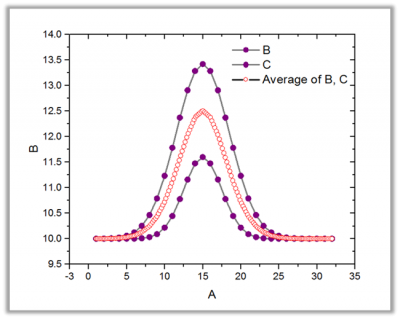
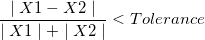

複数曲線の平均ツールは入力曲線を平均化または連結し、結果をXY範囲として出力します。手法で 連結が選択されている場合、入力曲線は連結され、新しい曲線を作成します。手法 で平均が選択されている場合、入力曲線は平均化され、新しい曲線を作成します。手法 が 平均 に設定されている場合、標準偏差、標準誤差、ポイント数などのその他の追加出力も出力できます。
| 再計算 |
分析結果の再計算の設定を変更します。
詳細情報は、 分析結果の再計算をご覧下さい。 |
|---|---|
| 入力 |
平均または連結する複数の曲線を指定します。 範囲の設定に関する詳細は、入力データを指定するをご覧ください。 |
| 手法 |
平均法を指定します。
|
| 平均化されたX |
手法が平均の時に利用できます。平均曲線を計算する際にＸ値をどう扱うかを決定します。
|
| 共通Xの許容値 |
平均化されたXの手法でソースXと同じが選択されているときに利用できます。許容内のXの値で平均化されます。 |
| ポイント数 |
これは平均化されたXでソースXと同じが選択されていない場合に利用できます。補間曲線のポイント数を指定します。自動チェックボックスが選択されている場合に自動的に数を計算します。自動のチェックを外すと値を入力できます。 |
| X最小 |
平均化されたXでカスタムが選択されているときに利用できます。（共通X範囲,全X範囲を選択しているときは変更できません。）平均化された曲線の最小Xを指定します。自動のチェックを付けると自動的に数字が指定されます。自動のチェックを外すと値を入力できます。 |
| X最大 |
平均化されたXでカスタムが選択されているときに利用できます。（共通X範囲,全X範囲を選択しているときは変更できません。）平均化された曲線の最大Xを指定します。自動のチェックを付けると自動的に数字が指定されます。自動のチェックを外すと値を入力できます。 |
| 補間 |
平均化されたXでソースXと同じが選択されていないときに利用できます。これは入力曲線を平均化する前にX値を補間する手法を指定します。
|
| 補外なし |
平均化されたXで全X範囲カスタム、曲線トレースに従うが選択されていないときに利用できます。入力曲線のX範囲が異なる場合に曲線を補間するかどうかを決定します。 |
| Xソート |
手法が結合の時に利用できます。平均化した曲線のX値をソートする手法を指定します。それに伴いY値が並び替えられます。
|
| 追加の出力 |
手法として平均が選択されているときにこのオプションを使用できます。
|
| 出力 |
どこに結果を出力するか設定します。すべてのプロットが同じものを共有する場合、入力プロットのロングネームと単位は引き継がれます。 範囲制御についてはこちらを参照してください：出力結果 |
手法で結合を選択すると、すべての入力範囲が一緒になり、各入力曲線からのデータポイントが1つ1つ連結されます。
手法が平均にセットされているとき、平均曲線のXとY値が計算されます。このXファンクションは、平均曲線のX値を計算する方法を5つサポートしています。
ソースXと同じX値を計算する最も簡単な方法は、許容値を指定し、2つのX値, X1 および X2を同じものとして取り扱い、条件で、それらを平均することです。対応するY値は平均されません。結果のＸは昇順でソートされます。
共通X範囲、全範囲X、 カスタム：これら3つの方法は、入力X範囲で、線形補間やスプライン補間、Bスプライン補間を実行して、平均した曲線のX値を計算します。最初に補間されるＸ値の範囲を決めます。Originは入力曲線を個別に補間して共通のX値を持つデータセットを作成します。それぞれのXでY値を平均して対応するY値を取得します。
曲線トレーズに従う：この方法は、トレース補間 を使って、XY値を計算します。この方法は、周期的または循環したデータを補間するのに役立ち、入力曲線の形状に似た形状の新しい曲線を作成できます。